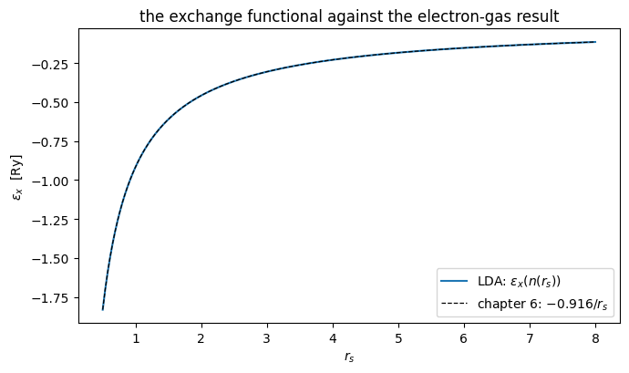
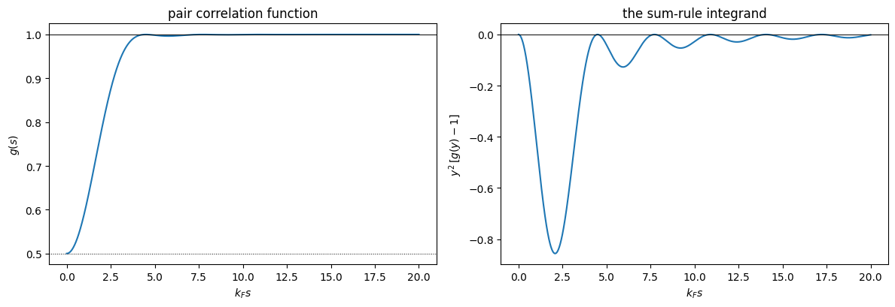
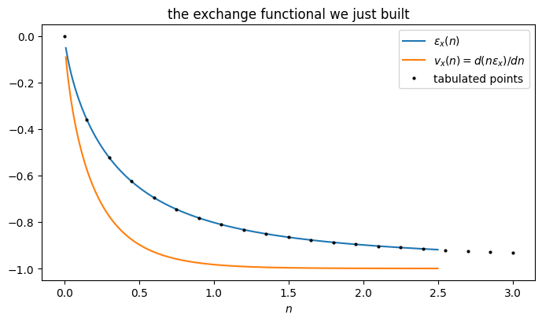
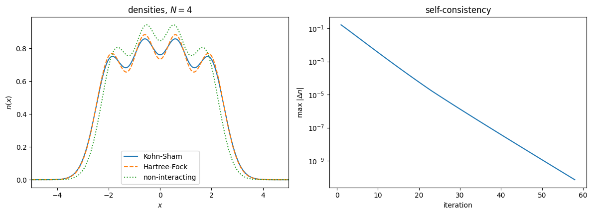
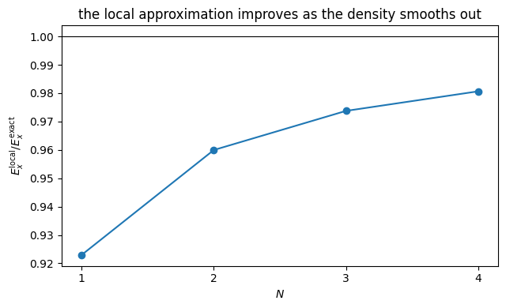
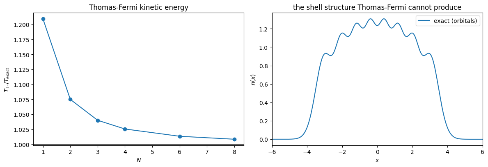

9. Density functional theory#
Companion notebook to Chapter 8 of Quantum mechanics for many-particle
systems. Every number quoted in the chapter is produced here; the code is
the same as in BookManybody/BookMaterial/Programs/dft.py.
The theme is that the local density approximation is not a black box but something one builds, from a system that can be solved exactly. We build it twice: once for the three-dimensional electron gas of Chapter 6, where the answer is analytic, and once numerically for the one-dimensional trap of Chapters 2 and 6, so that Kohn-Sham, Hartree-Fock and the exact answer can be compared for one and the same Hamiltonian.
Contents:
Where the LDA comes from
The exchange hole and its sum rule
Building a functional for the model interaction
Solving the Kohn-Sham equations
The self-interaction error
How good is the local approximation?
Thomas-Fermi, and why orbitals came back
import sys, os
import numpy as np
import matplotlib.pyplot as plt
sys.path.insert(0, os.path.join("..", "BookManybody", "BookMaterial", "Programs"))
import dft
np.set_printoptions(precision=6, suppress=True, linewidth=120)
9.1. 1. Where the local density approximation comes from#
with \(\epsilon_{\rm xc}\) taken from the uniform gas. For exchange the answer is analytic,
and evaluated on the uniform gas it must reproduce the \(-0.916/r_s\) of Chapter 6. That it does is a tautology — the LDA is defined to be exact there — but it is a useful check that the conventions line up.
dft.demo_lda_from_the_gas()
==========================================================================
1. Where the local density approximation comes from
==========================================================================
The exchange energy per particle of the three-dimensional gas,
eps_x(n) = -(3/4)(3/pi)^(1/3) n^(1/3),
is the whole content of the local density approximation for
exchange. Evaluated on the uniform gas it must reproduce the
0.916/r_s of chapter 6, and it does:
r_s eps_x [Ha] eps_x [Ry] -0.916/r_s
1.0000 -0.458165 -0.916331 -0.916000
2.0000 -0.229083 -0.458165 -0.458000
4.0000 -0.114541 -0.229083 -0.229000
4.8253 -0.094951 -0.189901 -0.189833
6.0000 -0.076361 -0.152722 -0.152667
the coefficient itself: 0.916331
against the 0.9163 exchange coefficient of chapter 6. This is not a
coincidence but a tautology: the LDA is *defined* so that it is
exact for the uniform gas. What is not obvious, and what makes it
useful, is that it remains good when the density varies.
The Thomas-Fermi kinetic energy density comes from the same
calculation, and equals the kinetic term of chapter 6 divided by
the volume:
r_s t_TF [Ha/a0^3] 3/5 eps_F [Ha]
1.0000 0.26378752 0.26378752
2.0000 0.00824336 0.00824336
4.0000 0.00025760 0.00025760
rs = np.linspace(0.5, 8.0, 400)
n = dft.ExchangeLDA3D.density_from_rs(rs)
fig, ax = plt.subplots(figsize=(7, 4.2))
ax.plot(rs, 2 * dft.ExchangeLDA3D.eps_x(n), label=r"LDA: $\epsilon_x(n(r_s))$")
ax.plot(rs, -0.916 / rs, "k--", lw=0.9, label=r"chapter 6: $-0.916/r_s$")
ax.set_xlabel(r"$r_s$"); ax.set_ylabel(r"$\epsilon_x$ [Ry]")
ax.set_title("the exchange functional against the electron-gas result")
ax.legend(); fig.tight_layout(); plt.show()

9.2. 2. The exchange hole#
Each electron moves inside a hole in the density of its neighbours. For the uniform gas the pair correlation function is exact at the Hartree-Fock level,
with \(g(0)=\tfrac12\): same-spin electrons never coincide, opposite-spin ones are uncorrelated at this level. The hole contains exactly one missing electron, and that sum rule is a large part of why local functionals work at all — the energy depends mostly on the charge of the hole, which is fixed exactly, and only weakly on its shape.
dft.demo_exchange_hole()
==========================================================================
2. The exchange hole
==========================================================================
Exchange is not a mysterious correction: it is the statement that
each electron carries around it a region depleted of electrons of
the same spin. For the uniform gas the pair correlation function
is known exactly at the Hartree-Fock level,
g(s) = 1 - (9/2)[(sin y - y cos y)/y^3]^2, y = k_F s.
k_F s g(s) interpretation
0.00 0.500000 g(0) = 1/2: same spins never coincide
0.50 0.524471
1.00 0.591838
2.00 0.786732
4.00 0.996208
8.00 0.999920
16.00 0.999939 the hole has healed
The hole integrates to exactly one missing electron,
n int d^3s [g(s) - 1] = (4 / 3 pi) int_0^inf dy y^2 [g(y) - 1]
= -1,
which is the sum rule that any decent approximate functional must
respect. Checking it numerically:
(4 / 3 pi) int dy y^2 [g(y) - 1] = -0.997615
The exact value of the integral is -pi/6 times 9/2, and the
prefactor turns it into exactly -1. Local functionals are built
to satisfy this sum rule even when they get the shape of the hole
wrong, which is a large part of why they work at all.
y = np.linspace(1e-6, 20.0, 2000)
g = dft.exchange_hole(y)
fig, ax = plt.subplots(1, 2, figsize=(12, 4.2))
ax[0].plot(y, g)
ax[0].axhline(1.0, color="k", lw=0.7); ax[0].axhline(0.5, color="k", ls=":", lw=0.7)
ax[0].set_xlabel(r"$k_F s$"); ax[0].set_ylabel("$g(s)$")
ax[0].set_title("pair correlation function")
ax[1].plot(y, y**2 * (g - 1.0))
ax[1].axhline(0.0, color="k", lw=0.7)
ax[1].set_xlabel(r"$k_F s$"); ax[1].set_ylabel(r"$y^2\,[g(y)-1]$")
ax[1].set_title("the sum-rule integrand")
fig.tight_layout(); plt.show()

9.3. 3. Building a functional for the model interaction#
The trap of Chapters 2 and 6 uses a softened Coulomb interaction in one dimension, for which no tabulated functional exists. So we do what is done in practice: solve the uniform gas once, tabulate, interpolate. For a spinless 1D gas \(k_F = \pi n\) and \(\rho^{(1)}(s) = \sin(k_F s)/\pi s\), so
dft.demo_lda_1d()
==========================================================================
3. Building a local functional for the model interaction
==========================================================================
The trap of chapters 2 and 6 has a softened Coulomb interaction in
one dimension, for which no closed-form exchange functional
exists. So we do what is done in practice: solve the uniform gas
once, tabulate, and interpolate. For a spinless one-dimensional
gas k_F = pi n, the density matrix is sin(k_F s)/(pi s), and
eps_x(n) = -(1/n) int_0^inf ds v(s) [sin(k_F s)/(pi s)]^2.
n eps_x(n) v_x(n)
0.050 -0.17352608 -0.29740316
0.100 -0.27855522 -0.45906496
0.200 -0.42332628 -0.65789106
0.400 -0.59557914 -0.84878595
0.800 -0.75884371 -0.96587633
1.500 -0.86548980 -0.99703512
2.500 -0.91895548 -0.99989688
Two checks. The interpolated energy density must reproduce the
integrated values it was built from, and the potential must be
the derivative of the energy density:
max |interpolated - integrated| = 1.47e-09
max |v_x - d(n eps_x)/dn| = 1.96e-10
lda = dft.ExchangeLDA1D()
n = np.linspace(0.01, 2.5, 400)
fig, ax = plt.subplots(figsize=(7, 4.2))
ax.plot(n, lda.eps_x(n), label=r"$\epsilon_x(n)$")
ax.plot(n, lda.v_x(n), label=r"$v_x(n) = d(n\epsilon_x)/dn$")
ax.plot(lda.grid[::12], lda.table[::12], "k.", ms=4,
label="tabulated points")
ax.set_xlabel("$n$"); ax.set_title("the exchange functional we just built")
ax.legend(); fig.tight_layout(); plt.show()

9.4. 4. Solving the Kohn-Sham equations#
iterated to self-consistency exactly as in Chapter 6. Same trap, same basis of eight oscillator orbitals, same interaction — so Kohn-Sham, Hartree-Fock and (for two particles) the exact answer are directly comparable.
dft.demo_kohn_sham()
==========================================================================
4. Solving the Kohn-Sham equations
==========================================================================
The same trap, the same basis of eight oscillator orbitals and the
same interaction as the Hartree-Fock calculation of chapter 6, so
that the two can be compared directly. For two particles the
exact answer is available as well.
N E(Kohn-Sham) E(Hartree-Fock) E(exact) KS iter HF iter
1 0.54752674 0.50000000 0.50000000 56 2
2 2.72022768 2.66308878 2.65923049 58 20
3 6.45108052 6.39016133 -- 58 20
4 11.68602229 11.62305385 -- 58 21
Kohn-Sham lies close to Hartree-Fock but not on top of it, and the
difference is not correlation -- we have put no correlation
functional in. It is the error of treating exchange locally, plus
the self-interaction discussed below.
lda = dft.ExchangeLDA1D()
fig, ax = plt.subplots(1, 2, figsize=(12, 4.4))
ks = dft.KohnSham1D(4, lda=lda); ks.run()
hf = dft.hartree_fock(4)
grid, phi = dft.oscillator_basis(8)
n_free = (phi[:4] ** 2).sum(axis=0)
n_hf = ((phi.T @ hf["C"][:, :4]) ** 2).sum(axis=1)
ax[0].plot(grid, ks.n, label="Kohn-Sham")
ax[0].plot(grid, n_hf, "--", label="Hartree-Fock")
ax[0].plot(grid, n_free, ":", label="non-interacting")
ax[0].set_xlim(-5, 5); ax[0].set_xlabel("$x$"); ax[0].set_ylabel("$n(x)$")
ax[0].set_title("densities, $N = 4$"); ax[0].legend()
it, energies, drifts = zip(*ks.history)
ax[1].semilogy(it, drifts)
ax[1].set_xlabel("iteration"); ax[1].set_ylabel(r"max $|\Delta n|$")
ax[1].set_title("self-consistency")
fig.tight_layout(); plt.show()

9.5. 5. The self-interaction error#
For one particle there is nothing to interact with, so the exact energy is the oscillator ground state, \(0.5\). Hartree-Fock gets this identically right — the direct and exchange terms cancel term by term. A local functional cannot, because it sees only the density, and the density of one electron is indistinguishable from the density of half of two.
dft.demo_self_interaction()
==========================================================================
5. The self-interaction error
==========================================================================
For one particle there is nothing to interact with, so the exact
energy is the oscillator ground state, 0.5. Hartree-Fock gets
this right identically: the direct and exchange terms cancel term
by term. A local exchange functional cannot, because it knows
only the density, and the density of one electron looks exactly
like the density of half of two.
exact 0.50000000
Hartree-Fock 0.50000000
Kohn-Sham (LDA x) 0.54752674
the Kohn-Sham pieces:
Hartree energy 0.60855522
exchange energy -0.56166291
sum 0.04689232 (should vanish)
particle number 1.00000000
The residue is the self-interaction error. It is the reason plain
LDA overbinds anions, underestimates barriers and gives band gaps
that are too small, and it is what self-interaction corrections and
hybrid functionals -- which put back a fraction of exact exchange --
are designed to remove.
The residue is what makes plain LDA overbind anions, underestimate reaction barriers and give band gaps that are too small: an electron is spuriously repelled by itself and spreads out to reduce that repulsion. Removing it is the business of self-interaction corrections and of hybrid functionals, which mix back a fraction of exact exchange.
9.6. 6. How good is the local approximation?#
We can isolate the error of locality alone by evaluating, on one and the same density, both the exact exchange energy of the determinant and the local estimate.
dft.demo_local_approximation()
==========================================================================
6. How good is the local approximation?
==========================================================================
We can isolate the error of locality by comparing, on the *same*
density, the exact exchange energy of a determinant with the local
estimate. Take the Kohn-Sham orbitals, compute both, and look at
the ratio.
N E_x (exact) E_x (LDA) ratio
1 -0.60855522 -0.56166291 0.9229
2 -1.33077771 -1.27749456 0.9600
3 -2.11087395 -2.05548416 0.9738
4 -2.92523775 -2.86866697 0.9807
The local approximation recovers most of the exchange energy, and
it recovers more of it as the particle number grows: the ratio
climbs from 0.92 to 0.98 between one and four particles. That is
exactly what the construction promises -- the density becomes
smoother on the scale of the local Fermi wavelength, so the
uniform-gas estimate becomes more appropriate. For one particle
it is worst, because there the exchange energy is nothing but the
cancellation of a spurious self-interaction. In three dimensions
the corresponding ratio is close to 0.9 for atoms, which is why
gradient corrections were introduced.
Ns = [1, 2, 3, 4]
ratios = []
for N in Ns:
ks = dft.KohnSham1D(N, lda=lda); ks.run()
vbar = dft.trap_two_body(8)
occ = ks.C[:, :N]
both = 0.5 * np.einsum("ai,bj,abcd,ci,dj->", occ, occ, vbar, occ, occ)
exact_x = both - ks.hartree_energy(ks.n)
ratios.append(ks.exchange_energy(ks.n) / exact_x)
fig, ax = plt.subplots(figsize=(6.5, 4))
ax.plot(Ns, ratios, "o-")
ax.axhline(1.0, color="k", lw=0.8)
ax.set_xticks(Ns); ax.set_xlabel("$N$")
ax.set_ylabel(r"$E_x^{\rm local} / E_x^{\rm exact}$")
ax.set_title("the local approximation improves as the density smooths out")
fig.tight_layout(); plt.show()

9.7. 7. Thomas-Fermi, and why orbitals came back#
Thomas-Fermi applies the local approximation to the kinetic energy as well, which removes orbitals entirely and leaves an algebraic equation for \(n(x)\). It is enormously cheaper — and it fails, not mainly in magnitude but in structure: the density it produces has no shells at all, and Teller proved that within the model no molecule is bound. The Kohn-Sham construction exists precisely to avoid this, by keeping orbitals for the one term that a local approximation handles badly.
dft.demo_thomas_fermi()
==========================================================================
7. Thomas-Fermi, and why orbitals came back
==========================================================================
The Thomas-Fermi model applies the local approximation to the
kinetic energy as well. For the one-dimensional trap the kinetic
density is t[n] = (pi^2/6) n^3, and minimising
E[n] = int dx {t[n] + x^2 n / 2} + E_H[n] + E_x[n]
gives an algebraic equation for n(x) with no orbitals at all.
The trouble is visible already for non-interacting particles,
where the exact kinetic energy is known:
N T (exact) T (Thomas-Fermi) ratio
1 0.250000 0.302300 1.2092
2 1.000000 1.074844 1.0748
3 2.250000 2.340025 1.0400
4 4.000000 4.101805 1.0255
6 9.000000 9.120038 1.0133
8 16.000000 16.134286 1.0084
Thomas-Fermi overshoots, badly for one particle and by less than
one per cent by eight, approaching the exact value from above as
the density smooths out. But the error in magnitude is not the
real problem. What the model misses is structure: the density it
produces is smooth and featureless, with no shells whatever, it
has no discrete spectrum to speak of, and it famously cannot bind
molecules -- Teller proved this. The Kohn-Sham construction exists
precisely to avoid this. By reintroducing orbitals for the
kinetic energy alone -- the one term we cannot approximate
locally -- it keeps shell structure exactly while leaving only the
small remainder to a local functional.
grid, phi = dft.oscillator_basis(8)
dx = grid[1] - grid[0]
Ns = np.array([1, 2, 3, 4, 6, 8])
ratio = []
for N in Ns:
n = (phi[:N] ** 2).sum(axis=0)
exact = sum(k + 0.5 for k in range(N)) - 0.5 * float(n @ grid**2) * dx
ratio.append(float(dft.ThomasFermi.kinetic_density(n).sum()) * dx / exact)
fig, ax = plt.subplots(1, 2, figsize=(12, 4.2))
ax[0].plot(Ns, ratio, "o-")
ax[0].axhline(1.0, color="k", lw=0.8)
ax[0].set_xlabel("$N$"); ax[0].set_ylabel(r"$T_{\rm TF} / T_{\rm exact}$")
ax[0].set_title("Thomas-Fermi kinetic energy")
n8 = (phi[:8] ** 2).sum(axis=0)
ax[1].plot(grid, n8, label="exact (orbitals)")
ax[1].set_xlim(-6, 6); ax[1].set_xlabel("$x$"); ax[1].set_ylabel("$n(x)$")
ax[1].set_title("the shell structure Thomas-Fermi cannot produce")
ax[1].legend()
fig.tight_layout(); plt.show()

9.8. The full program#
Everything above lives in BookManybody/BookMaterial/Programs/dft.py, which
runs as a script and prints all seven demonstrations of the chapter.
print(open(dft.__file__).read())
"""
Density functional theory: densities, functionals and the Kohn-Sham equations.
Companion code to chapter 8 of *Quantum mechanics for Many-particle Systems*.
Three things are done here.
First, the local density approximation is *derived* rather than quoted. For
the three-dimensional electron gas the exchange energy per particle is
obtained from the one-body density matrix of the filled Fermi sea and checked
against the analytic 0.916/r_s of chapter 6. The same construction is then
carried out numerically for a one-dimensional gas interacting through the
softened Coulomb potential used in chapters 2 and 6, which produces a
tabulated exchange functional for exactly that system.
Second, the Kohn-Sham equations are solved self-consistently in the same
oscillator basis as the Hartree-Fock calculation of chapter 6, so that
Hartree-Fock, Kohn-Sham and (for two particles) the exact answer can be
compared for one and the same Hamiltonian.
Third, the two characteristic errors of the local approximation are exhibited:
the exchange hole is too shallow and too short-ranged, and the self-interaction
that Hartree-Fock cancels exactly survives in the Kohn-Sham energy.
ExchangeLDA3D -- eps_x[n] for the three-dimensional electron gas
ExchangeLDA1D -- the same, built numerically for the model interaction
ThomasFermi -- the kinetic-energy functional and its failure
KohnSham1D -- a self-consistent Kohn-Sham solver
exchange_hole -- the pair correlation function of the uniform gas
Author: Morten Hjorth-Jensen
"""
from math import factorial, pi
import numpy as np
from numpy.polynomial.hermite import hermval
from scipy.linalg import eigh
# ---------------------------------------------------------------------------
# The three-dimensional electron gas
# ---------------------------------------------------------------------------
class ExchangeLDA3D:
"""Exchange energy per particle of the homogeneous electron gas.
The one-body density matrix of the filled Fermi sea is
rho(s) = 3 n [sin(k_F s) - k_F s cos(k_F s)] / (k_F s)^3 ,
and the exchange energy is
E_x / V = -(1/4) int d^3s v(s) |rho(s)|^2 ,
with v(s) = 1/s in Hartree atomic units. The integral can be done in
closed form and gives the familiar
eps_x(n) = -(3/4) (3/pi)^(1/3) n^(1/3) .
"""
@staticmethod
def eps_x(n):
"""Exchange energy per particle, in Hartree."""
n = np.asarray(n, dtype=float)
return -0.75 * (3.0 / pi) ** (1.0 / 3.0) * n ** (1.0 / 3.0)
@staticmethod
def v_x(n):
"""Exchange potential d(n eps_x)/dn = (4/3) eps_x."""
return (4.0 / 3.0) * ExchangeLDA3D.eps_x(n)
@staticmethod
def density_from_rs(rs):
"""n from the dimensionless radius r_s (in units of the Bohr radius)."""
return 3.0 / (4.0 * pi * np.asarray(rs, dtype=float) ** 3)
@staticmethod
def coefficient_rydberg():
"""The 0.916 of chapter 6, obtained from the LDA expression."""
return 0.75 * (3.0 / pi) ** (1.0 / 3.0) \
* (3.0 / (4.0 * pi)) ** (1.0 / 3.0) * 2.0
@staticmethod
def kinetic_density(n):
"""Thomas-Fermi kinetic energy density, in Hartree per unit volume."""
n = np.asarray(n, dtype=float)
return 0.3 * (3.0 * pi ** 2) ** (2.0 / 3.0) * n ** (5.0 / 3.0)
def exchange_hole(y):
"""The exchange part of the pair correlation function of the 3D gas.
With y = k_F s,
g(s) - 1 = -(9/2) [ (sin y - y cos y) / y^3 ]^2 ,
for a spin-unpolarised gas, so that g(0) = 1/2: two electrons of the same
spin never coincide, two of opposite spin are uncorrelated at this level.
"""
y = np.asarray(y, dtype=float)
out = np.empty_like(y)
small = np.abs(y) < 1e-8
out[small] = 1.0 / 3.0
ys = y[~small]
out[~small] = (np.sin(ys) - ys * np.cos(ys)) / ys ** 3
return 1.0 - 4.5 * out ** 2
# ---------------------------------------------------------------------------
# A one-dimensional gas with the interaction of chapters 2 and 6
# ---------------------------------------------------------------------------
class ExchangeLDA1D:
"""Exchange functional of a 1D gas of spinless fermions.
The interaction is the softened Coulomb potential of chapters 2 and 6,
v(s) = strength / sqrt(s^2 + softening^2) ,
for which no closed form exists. We therefore do what is done in
practice: solve the uniform gas once, tabulate eps_x(n), and interpolate.
At density n the Fermi momentum of a spinless one-dimensional gas is
k_F = pi n and the one-body density matrix is
rho(s) = sin(k_F s) / (pi s) ,
so that
eps_x(n) = -(1/n) int_0^inf ds v(s) [sin(k_F s) / (pi s)]^2 ,
the factor two from the two half-lines cancelling the one half of the
exchange integral.
"""
def __init__(self, strength=1.0, softening=0.5,
n_max=3.0, n_points=241, cutoff=400.0, n_quad=200001):
self.strength = strength
self.softening = softening
self.grid = np.linspace(1e-4, n_max, n_points)
self.table = np.array([self._integrate(n) for n in self.grid])
# a smooth interpolant, plus its derivative for the potential
self._spline = None
# ------------------------------------------------------------------
def interaction(self, s):
return self.strength / np.sqrt(s ** 2 + self.softening ** 2)
def _integrate(self, n, cutoff=400.0, n_quad=200001):
"""eps_x(n) by Simpson integration on a fine grid."""
k_f = pi * n
s = np.linspace(0.0, cutoff, n_quad)
ds = s[1] - s[0]
rho = np.empty_like(s)
rho[0] = k_f / pi
rho[1:] = np.sin(k_f * s[1:]) / (pi * s[1:])
f = self.interaction(s) * rho ** 2
# composite Simpson
integral = ds / 3.0 * (f[0] + f[-1]
+ 4.0 * f[1:-1:2].sum()
+ 2.0 * f[2:-2:2].sum())
return -integral / n
# ------------------------------------------------------------------
def _build_spline(self):
from scipy.interpolate import CubicSpline
self._spline = CubicSpline(self.grid, self.grid * self.table)
return self._spline
def energy_density(self, n):
"""n * eps_x(n), the exchange energy per unit length."""
if self._spline is None:
self._build_spline()
n = np.clip(np.asarray(n, dtype=float), 0.0, self.grid[-1])
return np.where(n < self.grid[0], 0.0, self._spline(n))
def eps_x(self, n):
n = np.asarray(n, dtype=float)
out = np.zeros_like(n)
mask = n > self.grid[0]
out[mask] = self.energy_density(n[mask]) / n[mask]
return out
def v_x(self, n):
"""d(n eps_x)/dn, the exchange potential."""
if self._spline is None:
self._build_spline()
n = np.clip(np.asarray(n, dtype=float), 0.0, self.grid[-1])
return np.where(n < self.grid[0], 0.0, self._spline(n, 1))
# ---------------------------------------------------------------------------
# Thomas-Fermi
# ---------------------------------------------------------------------------
class ThomasFermi:
"""The Thomas-Fermi model for the one-dimensional trap.
The kinetic functional of a spinless one-dimensional gas follows from the
same Fermi-sea average that gives Thomas-Fermi in three dimensions,
t[n] = (pi^2 / 6) n^3 ,
since T/L = int_{-k_F}^{k_F} dk/(2 pi) k^2/2 = k_F^3/(6 pi)
and k_F = pi n. Minimising
E[n] = int dx { t[n] + v_ext n } + E_H[n] + E_x[n]
subject to a fixed particle number gives an algebraic equation for n(x),
with no orbitals anywhere -- which is exactly why it has no shell
structure.
"""
@staticmethod
def kinetic_density(n):
return (pi ** 2 / 6.0) * np.asarray(n, dtype=float) ** 3
@staticmethod
def kinetic_potential(n):
return 0.5 * pi ** 2 * np.asarray(n, dtype=float) ** 2
# ---------------------------------------------------------------------------
# The trap: the same system as chapters 2 and 6
# ---------------------------------------------------------------------------
def oscillator_basis(n_orbitals=8, grid=None):
"""Harmonic-oscillator eigenfunctions on a grid, and the grid itself."""
if grid is None:
grid = np.linspace(-8.0, 8.0, 401)
phi = np.zeros((n_orbitals, grid.size))
for k in range(n_orbitals):
coef = np.zeros(k + 1)
coef[k] = 1.0
norm = 1.0 / np.sqrt(2.0 ** k * factorial(k) * np.sqrt(pi))
phi[k] = norm * hermval(grid, coef) * np.exp(-0.5 * grid ** 2)
return grid, phi
class KohnSham1D:
"""Self-consistent Kohn-Sham for N spinless fermions in a 1D trap.
The external potential is the harmonic trap, so the one-body part is
diagonal in the oscillator basis with eigenvalues k + 1/2. The
interaction is the softened Coulomb potential of chapters 2 and 6. At
each iteration we build
n(x) = sum_i |psi_i(x)|^2 ,
v_H(x) = int dy v(x, y) n(y) ,
v_x(x) = v_x^unif( n(x) ) (the local approximation)
project v_H + v_x onto the oscillator basis, diagonalise, and repeat.
"""
def __init__(self, n_particles, n_orbitals=8, strength=1.0,
softening=0.5, lda=None, grid=None):
self.N = n_particles
self.n_orbitals = n_orbitals
self.strength = strength
self.softening = softening
self.grid, self.phi = oscillator_basis(n_orbitals, grid)
self.dx = self.grid[1] - self.grid[0]
self.h0 = np.diag(np.arange(n_orbitals) + 0.5)
self.interaction = strength / np.sqrt(
(self.grid[:, None] - self.grid[None, :]) ** 2 + softening ** 2)
self.lda = lda if lda is not None else ExchangeLDA1D(strength, softening)
# ------------------------------------------------------------------
def density(self, C):
occupied = self.phi.T @ C[:, :self.N] # (grid, N)
return (occupied ** 2).sum(axis=1)
def hartree_potential(self, n):
return self.interaction @ n * self.dx
def project(self, potential):
"""<a| potential |b> on the grid."""
return (self.phi * potential) @ self.phi.T * self.dx
# ------------------------------------------------------------------
def hartree_energy(self, n):
return 0.5 * float(n @ (self.interaction @ n)) * self.dx ** 2
def exchange_energy(self, n):
return float(np.sum(self.lda.energy_density(n)) * self.dx)
def total_energy(self, eps, n):
"""E = sum_i eps_i - E_H + E_x - int v_x n."""
band = float(eps[:self.N].sum())
v_x = self.lda.v_x(n)
return (band - self.hartree_energy(n) + self.exchange_energy(n)
- float(n @ v_x) * self.dx)
# ------------------------------------------------------------------
def run(self, max_iter=400, tol=1e-10, mixing=0.3, verbose=False):
C = np.eye(self.n_orbitals)
n = self.density(C)
history = []
energy = np.nan
for iteration in range(1, max_iter + 1):
v_h = self.hartree_potential(n)
v_x = self.lda.v_x(n)
F = self.h0 + self.project(v_h + v_x)
eps, C = eigh(F)
n_new = self.density(C)
drift = float(np.abs(n_new - n).max())
n = (1.0 - mixing) * n + mixing * n_new
energy = self.total_energy(eps, n)
history.append((iteration, energy, drift))
if verbose:
print(f" {iteration:4d} E = {energy:14.10f} "
f"max |dn| = {drift:.3e}")
if drift < tol:
break
self.C, self.eps, self.n, self.E = C, eps, n, energy
self.iterations = iteration
self.history = history
return self.E
# ------------------------------------------------------------------
def components(self):
"""The pieces of the total energy, for inspection."""
occupied = self.phi.T @ self.C[:, :self.N]
kinetic = float(np.einsum("ai,ab,bi->", self.C[:, :self.N],
self.h0, self.C[:, :self.N]))
return dict(band=float(self.eps[:self.N].sum()),
one_body=kinetic,
hartree=self.hartree_energy(self.n),
exchange=self.exchange_energy(self.n),
total=self.E,
particles=float(self.n.sum() * self.dx))
# ---------------------------------------------------------------------------
# Hartree-Fock in the same basis, for comparison
# ---------------------------------------------------------------------------
def trap_two_body(n_orbitals=8, strength=1.0, softening=0.5, grid=None):
"""Antisymmetrised matrix elements of the softened Coulomb interaction."""
grid, phi = oscillator_basis(n_orbitals, grid)
dx = grid[1] - grid[0]
interaction = strength / np.sqrt(
(grid[:, None] - grid[None, :]) ** 2 + softening ** 2)
direct = np.einsum("ax,by,xy,cx,dy->abcd",
phi, phi, interaction * dx * dx, phi, phi,
optimize=True)
return direct - direct.transpose(0, 1, 3, 2)
def hartree_fock(n_particles, n_orbitals=8, strength=1.0, softening=0.5,
max_iter=400, tol=1e-12):
"""The Hartree-Fock calculation of chapter 6, repeated here."""
h0 = np.diag(np.arange(n_orbitals) + 0.5)
vbar = trap_two_body(n_orbitals, strength, softening)
C = np.eye(n_orbitals)
previous = None
for iteration in range(1, max_iter + 1):
rho = C[:, :n_particles] @ C[:, :n_particles].T
F = h0 + np.einsum("acbd,dc->ab", vbar, rho)
eps, C = eigh(F)
if previous is not None and abs(eps.sum() - previous) < tol:
break
previous = eps.sum()
occ = C[:, :n_particles]
one = np.einsum("ab,ab->", h0, occ @ occ.T)
two = 0.5 * np.einsum("ai,bj,abcd,ci,dj->", occ, occ, vbar, occ, occ)
return dict(energy=one + two, eps=eps, C=C, iterations=iteration,
vbar=vbar)
def exact_two_particle(n_orbitals=8, strength=1.0, softening=0.5):
"""Full configuration interaction for two spinless fermions."""
from itertools import combinations
vbar = trap_two_body(n_orbitals, strength, softening)
sp = np.arange(n_orbitals) + 0.5
pairs = list(combinations(range(n_orbitals), 2))
dim = len(pairs)
H = np.zeros((dim, dim))
for a, (i, j) in enumerate(pairs):
H[a, a] += sp[i] + sp[j]
for b, (k, l) in enumerate(pairs):
H[a, b] += vbar[i, j, k, l]
return float(np.linalg.eigvalsh(H)[0]), dim
# ---------------------------------------------------------------------------
# Demonstrations
# ---------------------------------------------------------------------------
def demo_lda_from_the_gas():
print("=" * 74)
print("1. Where the local density approximation comes from")
print("=" * 74)
print("The exchange energy per particle of the three-dimensional gas,")
print(" eps_x(n) = -(3/4)(3/pi)^(1/3) n^(1/3),")
print("is the whole content of the local density approximation for")
print("exchange. Evaluated on the uniform gas it must reproduce the")
print("0.916/r_s of chapter 6, and it does:")
print()
print(f"{'r_s':>8s} {'eps_x [Ha]':>14s} {'eps_x [Ry]':>14s} "
f"{'-0.916/r_s':>14s}")
for rs in (1.0, 2.0, 4.0, 4.8253, 6.0):
n = ExchangeLDA3D.density_from_rs(rs)
e = float(ExchangeLDA3D.eps_x(n))
print(f"{rs:8.4f} {e:14.6f} {2 * e:14.6f} {-0.916 / rs:14.6f}")
print()
print(f"the coefficient itself: {ExchangeLDA3D.coefficient_rydberg():.6f}")
print("against the 0.9163 exchange coefficient of chapter 6. This is not a")
print("coincidence but a tautology: the LDA is *defined* so that it is")
print("exact for the uniform gas. What is not obvious, and what makes it")
print("useful, is that it remains good when the density varies.")
print()
print("The Thomas-Fermi kinetic energy density comes from the same")
print("calculation, and equals the kinetic term of chapter 6 divided by")
print("the volume:")
print(f"{'r_s':>8s} {'t_TF [Ha/a0^3]':>18s} {'3/5 eps_F [Ha]':>18s}")
for rs in (1.0, 2.0, 4.0):
n = ExchangeLDA3D.density_from_rs(rs)
t = float(ExchangeLDA3D.kinetic_density(n))
k_f = (3.0 * pi ** 2 * n) ** (1.0 / 3.0)
print(f"{rs:8.4f} {t:18.8f} {0.6 * 0.5 * k_f ** 2 * n:18.8f}")
def demo_exchange_hole():
print("=" * 74)
print("2. The exchange hole")
print("=" * 74)
print("Exchange is not a mysterious correction: it is the statement that")
print("each electron carries around it a region depleted of electrons of")
print("the same spin. For the uniform gas the pair correlation function")
print("is known exactly at the Hartree-Fock level,")
print(" g(s) = 1 - (9/2)[(sin y - y cos y)/y^3]^2, y = k_F s.")
print()
print(f"{'k_F s':>8s} {'g(s)':>12s} interpretation")
for y in (0.0, 0.5, 1.0, 2.0, 4.0, 8.0, 16.0):
g = float(exchange_hole(np.array([y]))[0])
note = ""
if y == 0.0:
note = "g(0) = 1/2: same spins never coincide"
elif y > 10:
note = "the hole has healed"
print(f"{y:8.2f} {g:12.6f} {note}")
print()
print("The hole integrates to exactly one missing electron,")
print(" n int d^3s [g(s) - 1] = (4 / 3 pi) int_0^inf dy y^2 [g(y) - 1]")
print(" = -1,")
print("which is the sum rule that any decent approximate functional must")
print("respect. Checking it numerically:")
y = np.linspace(1e-8, 400.0, 4000001)
integrand = y ** 2 * (exchange_hole(y) - 1.0)
total = np.trapezoid(integrand, y) * 4.0 / (3.0 * pi)
print(f" (4 / 3 pi) int dy y^2 [g(y) - 1] = {total:.6f}")
print()
print("The exact value of the integral is -pi/6 times 9/2, and the")
print("prefactor turns it into exactly -1. Local functionals are built")
print("to satisfy this sum rule even when they get the shape of the hole")
print("wrong, which is a large part of why they work at all.")
def demo_lda_1d():
print("=" * 74)
print("3. Building a local functional for the model interaction")
print("=" * 74)
print("The trap of chapters 2 and 6 has a softened Coulomb interaction in")
print("one dimension, for which no closed-form exchange functional")
print("exists. So we do what is done in practice: solve the uniform gas")
print("once, tabulate, and interpolate. For a spinless one-dimensional")
print("gas k_F = pi n, the density matrix is sin(k_F s)/(pi s), and")
print(" eps_x(n) = -(1/n) int_0^inf ds v(s) [sin(k_F s)/(pi s)]^2.")
print()
lda = ExchangeLDA1D()
print(f"{'n':>8s} {'eps_x(n)':>14s} {'v_x(n)':>14s}")
for n in (0.05, 0.1, 0.2, 0.4, 0.8, 1.5, 2.5):
arr = np.array([n])
print(f"{n:8.3f} {lda.eps_x(arr)[0]:14.8f} "
f"{lda.v_x(arr)[0]:14.8f}")
print()
print("Two checks. The interpolated energy density must reproduce the")
print("integrated values it was built from, and the potential must be")
print("the derivative of the energy density:")
test = np.array([0.15, 0.35, 0.9, 1.8])
direct = np.array([lda._integrate(float(x)) for x in test])
print(f" max |interpolated - integrated| = "
f"{np.abs(lda.eps_x(test) - direct).max():.2e}")
h = 1e-5
numeric = (lda.energy_density(test + h)
- lda.energy_density(test - h)) / (2 * h)
print(f" max |v_x - d(n eps_x)/dn| = "
f"{np.abs(lda.v_x(test) - numeric).max():.2e}")
def demo_kohn_sham():
print("=" * 74)
print("4. Solving the Kohn-Sham equations")
print("=" * 74)
print("The same trap, the same basis of eight oscillator orbitals and the")
print("same interaction as the Hartree-Fock calculation of chapter 6, so")
print("that the two can be compared directly. For two particles the")
print("exact answer is available as well.")
print()
lda = ExchangeLDA1D()
print(f"{'N':>3s} {'E(Kohn-Sham)':>15s} {'E(Hartree-Fock)':>17s} "
f"{'E(exact)':>12s} {'KS iter':>9s} {'HF iter':>9s}")
for N in (1, 2, 3, 4):
ks = KohnSham1D(N, lda=lda)
ks.run()
hf = hartree_fock(N)
if N == 2:
exact, _ = exact_two_particle()
exact_str = f"{exact:12.8f}"
elif N == 1:
exact_str = f"{0.5:12.8f}"
else:
exact_str = f"{'--':>12s}"
print(f"{N:3d} {ks.E:15.8f} {hf['energy']:17.8f} {exact_str} "
f"{ks.iterations:9d} {hf['iterations']:9d}")
print()
print("Kohn-Sham lies close to Hartree-Fock but not on top of it, and the")
print("difference is not correlation -- we have put no correlation")
print("functional in. It is the error of treating exchange locally, plus")
print("the self-interaction discussed below.")
def demo_self_interaction():
print("=" * 74)
print("5. The self-interaction error")
print("=" * 74)
print("For one particle there is nothing to interact with, so the exact")
print("energy is the oscillator ground state, 0.5. Hartree-Fock gets")
print("this right identically: the direct and exchange terms cancel term")
print("by term. A local exchange functional cannot, because it knows")
print("only the density, and the density of one electron looks exactly")
print("like the density of half of two.")
print()
lda = ExchangeLDA1D()
ks = KohnSham1D(1, lda=lda)
ks.run()
parts = ks.components()
hf = hartree_fock(1)
print(f" exact 0.50000000")
print(f" Hartree-Fock {hf['energy']:15.8f}")
print(f" Kohn-Sham (LDA x) {ks.E:15.8f}")
print()
print(" the Kohn-Sham pieces:")
print(f" Hartree energy {parts['hartree']:15.8f}")
print(f" exchange energy {parts['exchange']:15.8f}")
print(f" sum {parts['hartree'] + parts['exchange']:15.8f}"
" (should vanish)")
print(f" particle number {parts['particles']:15.8f}")
print()
print("The residue is the self-interaction error. It is the reason plain")
print("LDA overbinds anions, underestimates barriers and gives band gaps")
print("that are too small, and it is what self-interaction corrections and")
print("hybrid functionals -- which put back a fraction of exact exchange --")
print("are designed to remove.")
def demo_local_approximation():
print("=" * 74)
print("6. How good is the local approximation?")
print("=" * 74)
print("We can isolate the error of locality by comparing, on the *same*")
print("density, the exact exchange energy of a determinant with the local")
print("estimate. Take the Kohn-Sham orbitals, compute both, and look at")
print("the ratio.")
print()
lda = ExchangeLDA1D()
print(f"{'N':>3s} {'E_x (exact)':>15s} {'E_x (LDA)':>15s} {'ratio':>9s}")
for N in (1, 2, 3, 4):
ks = KohnSham1D(N, lda=lda)
ks.run()
vbar = trap_two_body(ks.n_orbitals)
occ = ks.C[:, :N]
direct_plus_exchange = 0.5 * np.einsum(
"ai,bj,abcd,ci,dj->", occ, occ, vbar, occ, occ)
hartree = ks.hartree_energy(ks.n)
exact_x = direct_plus_exchange - hartree
local_x = ks.exchange_energy(ks.n)
print(f"{N:3d} {exact_x:15.8f} {local_x:15.8f} "
f"{local_x / exact_x:9.4f}")
print()
print("The local approximation recovers most of the exchange energy, and")
print("it recovers more of it as the particle number grows: the ratio")
print("climbs from 0.92 to 0.98 between one and four particles. That is")
print("exactly what the construction promises -- the density becomes")
print("smoother on the scale of the local Fermi wavelength, so the")
print("uniform-gas estimate becomes more appropriate. For one particle")
print("it is worst, because there the exchange energy is nothing but the")
print("cancellation of a spurious self-interaction. In three dimensions")
print("the corresponding ratio is close to 0.9 for atoms, which is why")
print("gradient corrections were introduced.")
def demo_thomas_fermi():
print("=" * 74)
print("7. Thomas-Fermi, and why orbitals came back")
print("=" * 74)
print("The Thomas-Fermi model applies the local approximation to the")
print("kinetic energy as well. For the one-dimensional trap the kinetic")
print("density is t[n] = (pi^2/6) n^3, and minimising")
print(" E[n] = int dx {t[n] + x^2 n / 2} + E_H[n] + E_x[n]")
print("gives an algebraic equation for n(x) with no orbitals at all.")
print()
print("The trouble is visible already for non-interacting particles,")
print("where the exact kinetic energy is known:")
print(f"{'N':>3s} {'T (exact)':>12s} {'T (Thomas-Fermi)':>18s} "
f"{'ratio':>9s}")
grid, phi = oscillator_basis(8)
dx = grid[1] - grid[0]
for N in (1, 2, 3, 4, 6, 8):
n = (phi[:N] ** 2).sum(axis=0)
exact = sum(k + 0.5 for k in range(N)) \
- 0.5 * float(n @ grid ** 2) * dx
tf = float(ThomasFermi.kinetic_density(n).sum()) * dx
print(f"{N:3d} {exact:12.6f} {tf:18.6f} {tf / exact:9.4f}")
print()
print("Thomas-Fermi overshoots, badly for one particle and by less than")
print("one per cent by eight, approaching the exact value from above as")
print("the density smooths out. But the error in magnitude is not the")
print("real problem. What the model misses is structure: the density it")
print("produces is smooth and featureless, with no shells whatever, it")
print("has no discrete spectrum to speak of, and it famously cannot bind")
print("molecules -- Teller proved this. The Kohn-Sham construction exists")
print("precisely to avoid this. By reintroducing orbitals for the")
print("kinetic energy alone -- the one term we cannot approximate")
print("locally -- it keeps shell structure exactly while leaving only the")
print("small remainder to a local functional.")
def _demo():
for f in (demo_lda_from_the_gas, demo_exchange_hole, demo_lda_1d,
demo_kohn_sham, demo_self_interaction,
demo_local_approximation, demo_thomas_fermi):
f()
print()
if __name__ == "__main__":
_demo()